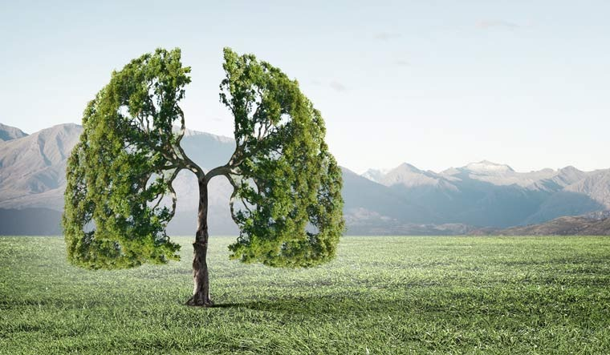

Save The Environment

Nature can refer to the general realm of living plants and animals, and in some cases to the processes associated with inanimate objects— the way that particular types of things exist and change of their own accord, such as the weather and geology of the Earth. During the advent of modern scientific method in the last several centuries, nature became the passive reality, organized and moved by divine laws. With the Industrial revolution, nature increasingly became seen as the part of reality deprived from intentional intervention: it was hence considered as sacred by some traditions (Rousseau, American transcendentalism) or a mere decorum for divine providence or human history.
Nature is sending us a message with the coronavirus pandemic and the ongoing climate crisis, UN’s environment programme chief, told Guardian.
Go Green Breath Clean
About
In nature, nothing is perfect and everything is perfect. Trees can be contorted, bent in weird ways, and they're still beautiful
Look into the nature, and then you will
understand everything.
Every flower is a soul blossoming in the nature.
Ithink having land and not ruining it is the most beautiful art that anybody could ever want